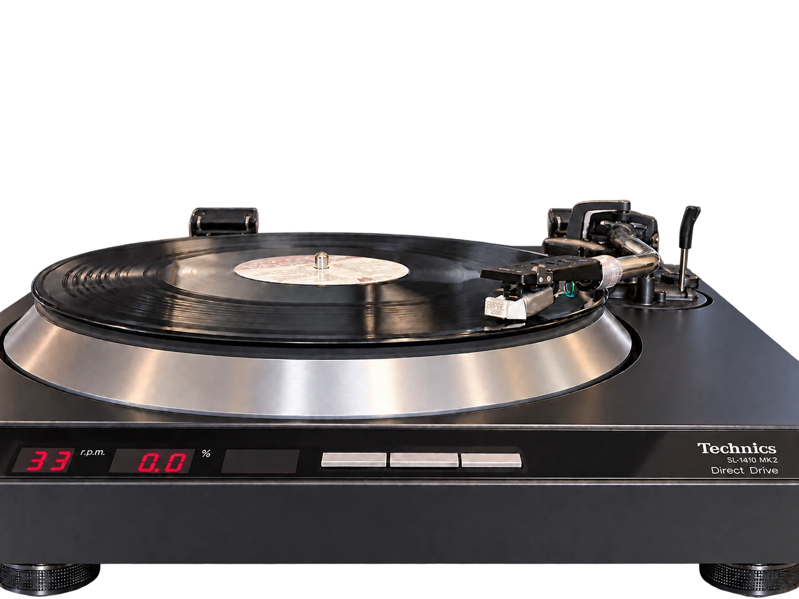

Empire 7000/III
Technics SL-1410 MK2 · ART USB Phono Plus
- Playback speed
- 33.33 RPM
- Speed error
- −0.01%
- DIN-shaped W&F
- 0.040%
- Separation
- 23.8 dB
Near-nominal speed and steady harmonic levels, documented through ART USB Phono Plus. Four L/R rotation-fingerprint views are available.
Measurement details
- Input interface
- ART USB Phono Plus (USB Audio CODEC)
- Channel balance
- −0.26 dB
- THD, left / right
- 2.26% / 1.85%
- Record status
- Draft — setup metadata incomplete
Harmonics were steady during recording. A repeat capture can test the persistence of the channel differences.